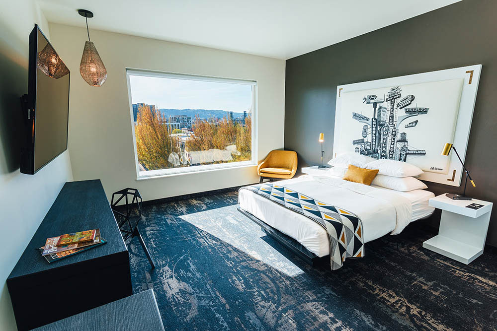
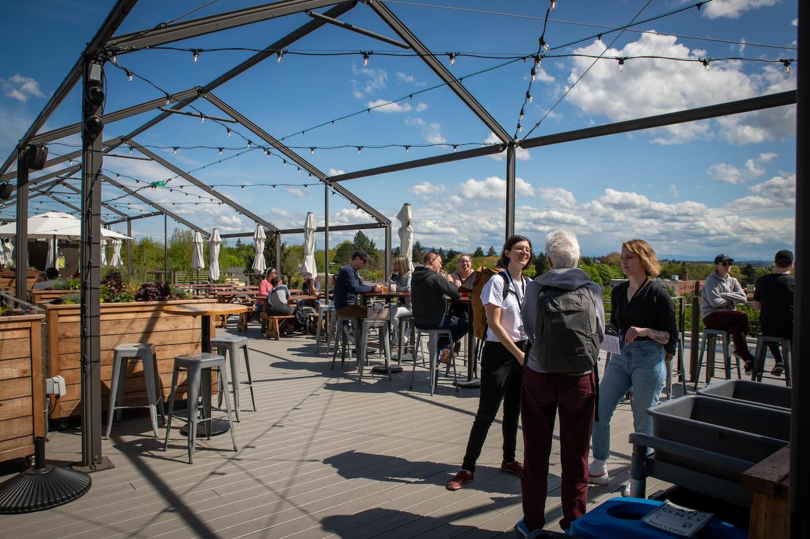

Visiting Portland¶
Welcome to Portland, the largest city in the state of Oregon with a population of over 2.2 million people in the greater metro area. The conference takes place in inner Southeast Portland at Revolution Hall and is conveniently situated near outstanding options for food, bars, and hotels.
“Portland is perhaps best known for being a sustainability-minded, bike-friendly city with easy access to nature; plentiful coffee, art, craft beer, delicious food and live music; and crafty people who celebrate individuality and creativity,” writes Travel Portland.
Where to Stay¶

The venue is located in the historic Buckman neighborhood. It is surrounded by a mixture of vintage and modern housing.
There are many neighborhood options on VRBO and Airbnb.
There are a number of hotels located within two miles of the venue. These are a short rideshare trip away! Some of these are within walking distance, but please note that our beloved city has experienced an increase in unhoused residents in the past few years, and you may see this.
Hotels in East Portland (near venue)¶
10% Off Discount Code: THEDOCS
Manages Jupiter Original and Jupiter NEXT hotels
Discount Code applies to both hotels
Hey Love restaurant/bar in NEXT lobby
0.6 miles to venue
10% Off Discount Code: THEDOCS
Guests who book before 3/31 receive 2 drink tokens for the bar
21 private and 3 shared rooms available (as of 1/24)
Pacific Standard restaurant/bar in lobby
0.8 miles to venue
Wonderful rooftop restaurant and bar
1.2 miles to venue
Hotels Downtown/West Portland¶
Boutique hotel with private and shared room options
1.8 miles to venue
Luxury hotel
Coffee shop, good coffee, and cocktail bar, Abigail Hall, located inside
1.7 miles to venue
Boutique hotel
1.7 miles to venue
Food and Beverages¶

Snacks and beverages are provided throughout conference times. Lunch and dinners are an opportunity to connect with new friends and explore Portland’s vibrant scene. For attendees with specific dietary needs, Portland has inclusive and accommodating options.
Below are some recommended destinations near the venue, but there are many great restaurants and bars in the area. Ask the Welcome Wagon team for any suggestions or questions regarding food and drink locations. Be sure to check hours of service before venturing out!
Food near Revolution Hall¶
Meat Cheese Bread sandwiches
Flattop & Salamander brunch
Sweetpea Baking Co. vegan bakery
Grand Fir Brewing (closed Monday)
Fermenter plant based vegan
Nostrana (dinner only, closed Sunday)
Rx Coffee coffee, bagels, and pastries
Food Carts near Revolution Hall¶
Lil’ America (closest to venue, BIPOC and/or LGBTQ+ owned)
Other SE Portland Destinations¶
Food¶
Nong’s Khao Man Gai Thai street food
Sizzle Pie pizza
Snappy’s sandwiches
Fire on the Mountain wings
Afuri Izakaya ramen
Kachka eastern European food
Bar Casa Vale Spanish inspired (dinner only)
Drink¶
Hungry Tiger neighborhood bar
Hey Love cocktails and music
Crush LGBTQIA bar
Beer (across street from venue)
Scotch Lodge whisky bar (reservations suggested)
Sharetea Burnside bubble tea
Coava Flagship craft coffee cafe
Grocery and Convenience Stores¶
Market of Choice grocery store
Plaid Pantry convenience store
Additional Resources¶
Where to Eat Exceptionally Well in East Portland (Eater PDX)
Central Eastside (Travel Portland)
Portland’s Top 50 Restaurants (Portland Monthly)
Getting Around¶
Portland is an accessible city and there are many transportation options available, public and otherwise. Portland is divided into six quadrants (with Burnside Avenue delineating north and south sections, and the Willamette River separating west and east sections). It is a city of neighborhoods, and each has its own distinct personality. We encourage you to connect with other documentarians and explore our unique neighborhoods during your stay.
Public Transportation¶
Portland has a bus, light rail, and streetcar lines to get around the city. Check the TriMet Trip Planner for more information.
Bus¶
There are four bus lines that run close to Revolution Hall.
If you’re coming from downtown:
Line 15 (Belmont)
Line 12 (Sandy Blvd.)
Line 19 (Glisan)
Line 20 (Burnside)
If you are coming from the Convention Center area:
Line 70 (12th Ave.)
Light Rail and Streetcar Line¶
The MAX is Portland’s major light-rail system. The MAX primarily connects Portland with the surrounding cities, such as Gresham, Beaverton, Clackamas, and Hillsboro. If you’re flying into Portland Airport (PDX), there is a MAX station for the Red Line in the airport itself.
The Portland Streetcar serves areas surrounding downtown. There is a dropoff location 7 blocks from the venue.
If you are planning on using the MAX, Portland Streetcar and/or city buses frequently during your stay, it may be worth investing in the Hop Fastpass fare card system. It is easy to pay with a card in your mobile wallet for a one-time ride or you may purchase MAX or Streetcar tickets from a machine at the airport. Purchase before boarding.
TriMet Adult fares:
2.5 hour = $2.80
Day Pass = $5.60
Use the TriMet Trip Planner to plan your trip!
Bike Rentals¶
There is a bike rental company and bikeshare program in downtown Portland if you want to experience Portland by bike (which we very much recommend). Make sure to check your route online for elevation changes - parts of Portland are very hilly!